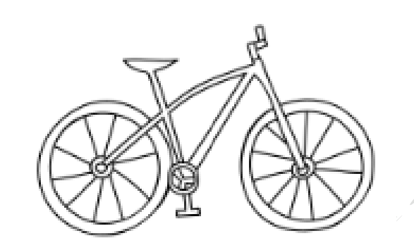

גאומטריה לכיתה ח'
76
ב
היקף מעגל ושטחו
גאומטריה · כיתה ח' · המספר π, היקף ושטח עיגול
תומר מדד את רדיוס הגלגל של אופניו וקיבל
30
ס"מ. חשבו את היקף הגלגל (היעזרו ב־
π ≈ 3.14
). "ההיקף של הגלגל הוא בערך
ס"מ".
